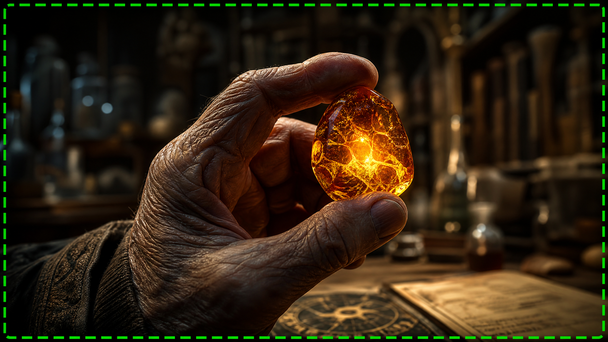

Elege van a Vércukorszint Állandó Ellenőrzéséből? Létezik Megoldás, Amit Elhallgattak Ön Elől!
Évekig azt mondták Önnek, hogy el kell fogadnia az állapotát, minden étkezést ellenőriznie kell, és állandó félelemben kell élnie a cukorszint ingadozásától. De mi van, ha azt mondom, hogy létezik egy **ősi, természetes mechanizmus**, amelyet magyar tudósok fedeztek fel újra, és amely segíthet testének visszanyerni elvesztett egyensúlyát? Egy titok, amelyet a modern orvostudomány figyelmen kívül hagyott, de most végre elérhető.
Képzelje el, hogy minden reggel energiával ébred, szellemi köd nélkül, és szabadon élvezheti kedvenc ételeit bűntudat nélkül. Ez nem elérhetetlen álom, hanem konkrét lehetőség több ezer ember számára, akik már felfedezték ezt a módszert. Itt az ideje, hogy visszavegye az irányítást élete és egészsége felett.

Az "Arany Esszencia", Amely Forradalmasíthatja Anyagcseréjét
Ennek a hihetetlen felfedezésnek a középpontjában egy természetes elem, egy igazi "Arany Esszencia" áll, amelynek létezése generációkon át öröklődött. Ez nem gyógyszer, nincs mellékhatása, és nem igényel kimerítő diétákat. Ez az esszencia, ha helyesen használják, közvetlenül a sejtekre hat, újraaktiválja azok képességét a cukor hatékony feldolgozására és javítja az érzékenységet.
Független tanulmányok kimutatták, hogy ez az "Arany Esszencia" segíthet stabilizálni a vércukorszintet, csökkenteni az inzulinrezisztenciát és javítani az általános egészségi állapotot. Mintha a teste "lökést" kapna, hogy újra úgy működjön, ahogy kell, lehetővé téve, hogy teljesebb életet éljen anélkül, hogy az eddig rákényszerített korlátozásokkal kellene élnie.
Ne Engedje, Hogy Azt Mondják, Nincs Remény!
Ha elege van az üres ígéretekből és az ideiglenes megoldásokból, ha végre meg akarja oldani a probléma gyökerét, és nem csak a tüneteket, akkor ismernie kell ezt a titkot. Ne hagyja, hogy kora vagy állapota határozza meg. Megérdemli, hogy vitalitással, energiával és szabadsággal teli életet éljen, és élvezze annak minden pillanatát.
Ez az Ön lehetősége, hogy felfedezze az igazságot. Kattintson az alábbi gombra, és hozzáférhet egy exkluzív videóhoz, amely minden részletet feltár arról, hogyan alakíthatja át ez az "Arany Esszencia" az egészségét, és adhatja vissza azt a szabadságot, amelyet azt hitte, örökre elveszített. Ne várja meg, amíg túl késő lesz!
KATTINTSON IDE ÉS FEDEZZE FEL A STABIL CUKORSZINT ÉS TÖBB ENERGIA TITKÁT!